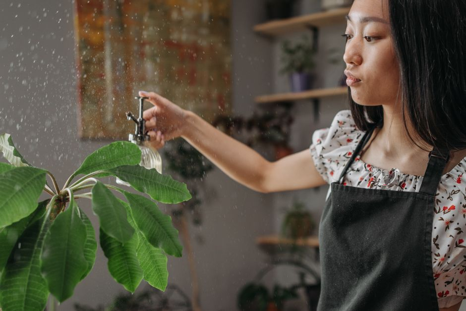

How to Properly Water Indoor Plants Without Overwatering

Photo: ROCKETMANN TEAM / Pexels
Too much water kills more houseplants than too little. Roots need air as much as water. Here is a simple method that works for almost every plant.
Check before you water
Push a finger about one inch (2 to 3 cm) into the soil. If it feels moist, wait. If it is dry, water. For succulents, cacti, ZZ plants and snake plants, wait until the soil is dry all the way down. For plants that like evenly moist soil, such as ferns and calathea, water when the top is just dry.
Water correctly
Use room-temperature water. Pour slowly around the base of the plant until water runs out of the drainage holes, then empty the saucer after 15 to 30 minutes. Avoid wetting the leaves needlessly.
The pot matters as much as the water
- Choose a pot with a drainage hole.
- If you use a decorative cover pot, take the plant out to water it and let it drain.
- Use a potting mix suited to the plant, with extra drainage for succulents.
Adjust with the seasons
Soil dries faster in summer. In winter, growth slows and plants need less water. No single schedule suits every plant.
Signs of overwatering
- soft or yellow leaves;
- soil that stays soggy, sometimes with a musty smell;
- a mushy or black stem base;
- tiny flies around the pot.
If you suspect root rot, remove the plant from its pot, trim soft or black roots with clean scissors and repot in fresh, dry mix.
Signs of underwatering
Very dry soil pulling away from the pot, dull or curling leaves. Water slowly, in several rounds, so the soil can rehydrate.
When in doubt, wait a day: plants recover from thirst better than from soggy roots. Keep toxic plants such as pothos, philodendron and peace lily out of reach of cats and dogs.
Recommended products
As an Amazon Associate, I earn from qualifying purchases.